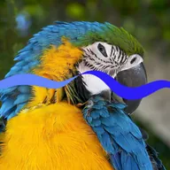

Lint

Tekent een kronkelend lint met wisselende breedte over de ondoorzichtige delen van de laag; animeer Fase om het te laten stromen, of spaar het uit de laag uit.
Instellingen
| Instelling | Type | Bereik | Standaard |
|---|---|---|---|
| Uitslag | Getal | 0 tot 1 | 0.2 |
| Frequentie | Getal | 0.1 tot 20 | 3 |
| Breedte | Getal | 0 tot 5 | 0.2 |
| Fase | Getal | 0 tot 1000 | 0 |
| Verschuiving | Getal | -1 tot 1 | 0 |
| Kleur | Kleur | – | #2D1EF6 |
| Uitsparen | Aan of uit | – | Uit |
| Afvlakking | Getal | 0 tot 1 | 0.01 |
| Tint | Kleur | – | #88CCFF |
| Hoeveelheid tint | Getal | 0% tot 100% | 0% |
| Hoek | Hoek | -3600° tot 3600° | 0° |